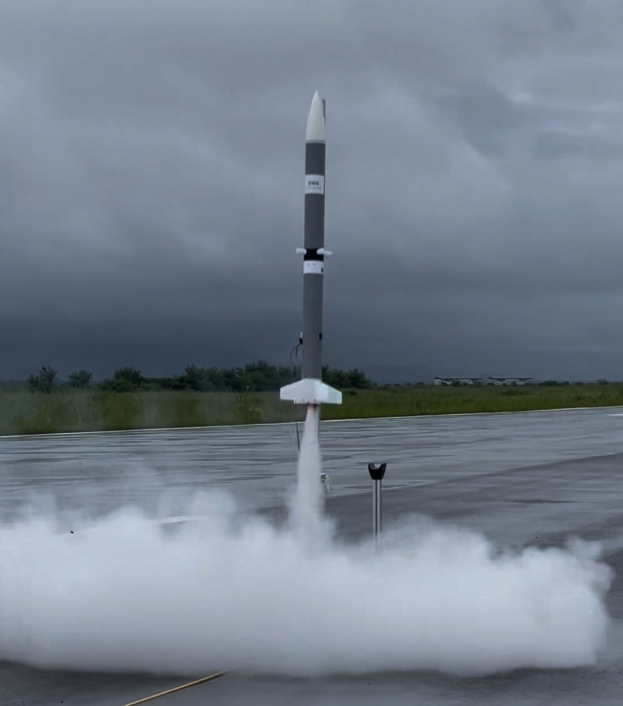
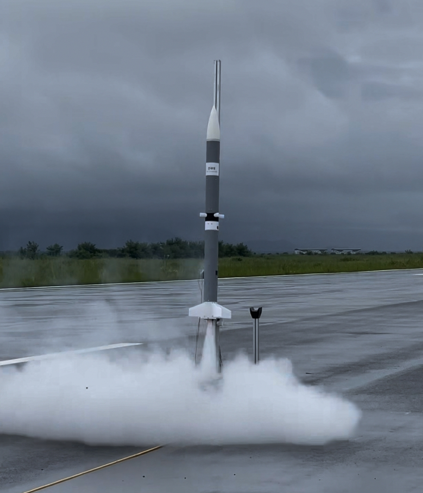
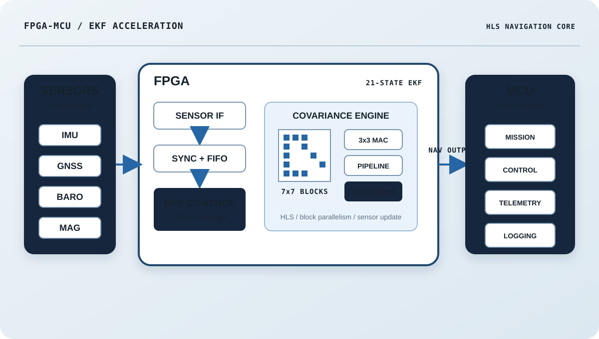
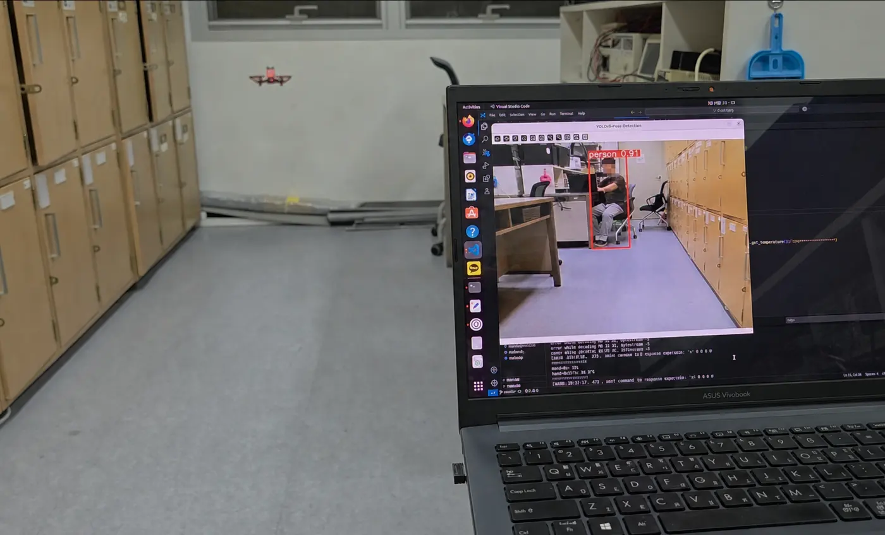
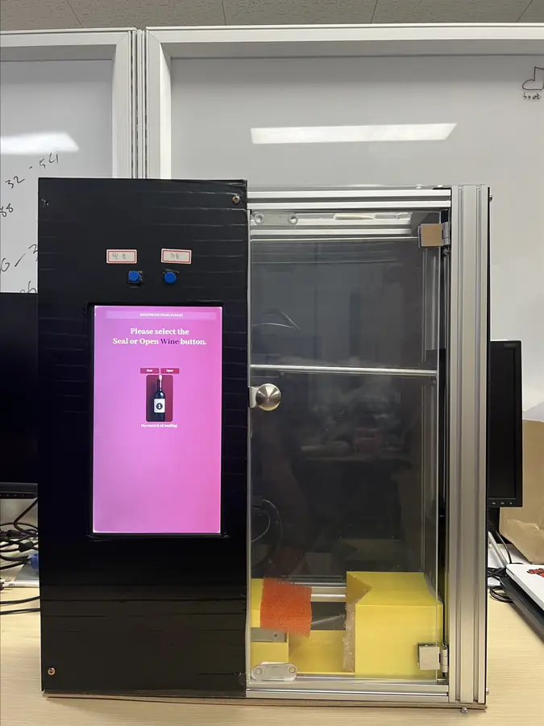

Model-Based GNC
Model-driven guidance, navigation, and control for aerospace vehicle motion and trajectory regulation.
I am an electrical engineering student pursuing model-based guidance, navigation, and control alongside vision and optical navigation for aerospace systems.

02 / Research
My interests center on model-based GNC and vision/optical navigation, supported by state estimation, embedded computing, and experimental validation.
Model-driven guidance, navigation, and control for aerospace vehicle motion and trajectory regulation.
Camera-based target detection, relative-motion estimation, and optical-flow tracking for autonomous flight.
03 / Projects
Each entry separates implemented work from ongoing development and documented study.

Flight systems
Built a real-time telemetry GCS verified at approximately 600 m and developing an STM32F405 HILS replay platform for repeatable avionics firmware validation.
Embedded control
Implemented chassis roll/pitch PD control on an STM32F405 for a four-motor stroller-scale testbed, with Arduino UNO R4 WiFi telemetry and web ON/OFF control. Final firmware, a demonstration video, and the submission report are published; closed-loop performance validation remains ongoing.

FPGA navigation
Developing an HLS-based 21-state EKF and an Arty A7-100T architecture to synchronize multi-rate IMU, GNSS, barometer, and magnetometer data.
OngoingNavigation
Implemented and evaluated a 15-state loosely coupled EKF for UGV trajectory estimation, including position, velocity, and attitude error analysis.
View repositoryComputer vision
Developing real-time landing-target detection and relative motion tracking with C++/OpenCV feature matching and optical flow.
OngoingIndoor localization
Developing a Raspberry Pi 4-based localization system with sensor fusion, database logging, and web-based monitoring and control.
OngoingDigital hardware
Implemented FC1-Norm-ReLU-FC2 inference with a reusable 4x4 weight-stationary systolic array, tiled multiplication, and batch-mode control logic.
View repositoryEmbedded optimization
Benchmarked a 64-point radix-2 DIF FFT on a Zybo Z7-20, comparing DFT, C FFT, and ARMv7 assembly across compiler and cache configurations.
View studyComputer architecture
Implemented a 16-bit pipelined CPU with arithmetic, memory, branch instructions, and multi-stage data forwarding.
View architecture
Computer vision
Developed YOLO-based person detection and bounding-box control logic for real-time drone-following experiments.
View prototype
Embedded vision
Developed YOLOv8 bottle-mouth detection and Arduino-driven control software for automated wine sealing and opening.
View project04 / Experience
Electronics Team Member, Konkuk University
Rocket avionics, telemetry, HILS, and FPGA navigationUndergraduate Research Student, Konkuk University
Adviser: Prof. Sang-Kyung Sung | INS/GNSS integrated navigationParticipant, Seoul National University
ROS2 communication, MuJoCo simulation, and MoveIt2B.S. Candidate in Electrical and Electronics Engineering
Expected graduation: February 2028President / Vice President / Executive Board Member
Led an embedded software and hardware prototyping club.Chair
Coordinated student governance and communication with the department.05 / Contact
For research and engineering conversations, reach me by email or through the profiles below.